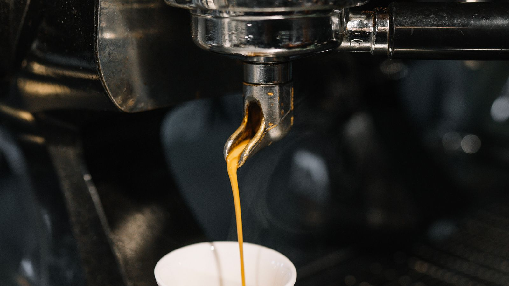

We roast our own.
Small batches, twice a week, in the machine you can see from the counter. If you can smell it, it was probably roasted within the last few days.

Open Tuesday to Sunday, 7:30am – 5:00pm · 8 Chalk Lane · Find us →
Small batches, twice a week, in the machine you can see from the counter. If you can smell it, it was probably roasted within the last few days.
Everything in the pastry case was made on site that morning. When the almond croissants run out, they run out.
Big tables, honest wifi, and nobody hovering to turn your seat. Laptops welcome on weekdays; humans welcome always.
Secondary teaser
Hungry already? See the full menu →